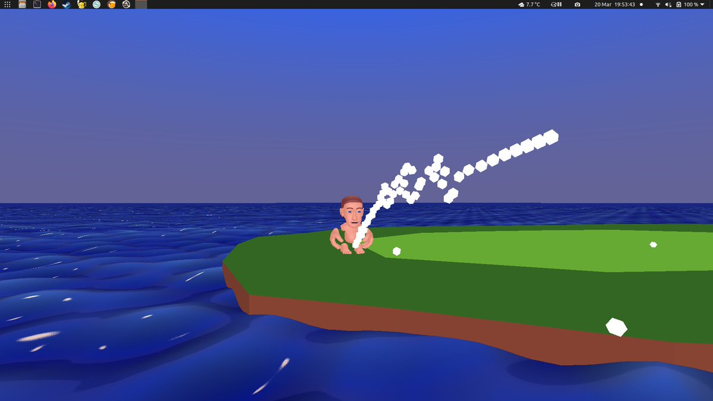

@magic_bane Shhhhhhhhh
It's how I interact with game shops, you are going to throw me off my routine.
It's great that all the shops are going to be open tomorrow.
I'm really looking forward to staring at a shelf of second hand games and finding out what number of FIFA we are on now.
https://twitter.com/BradfordCivic/status/1380916773931905030 @BradfordCivic I'm assuming that as well as not just being aerial scans this will be somewhat higher resolution than what you can currently get from http://data.gov.uk ?
Although to be honest it's already pretty amazing that these scans exists.
Does anyone know how the Yaohnanen people are taking this?
Do they even know yet?
https://twitter.com/ThatGuyYouDK/status/1379456611157172224 @ThatGuyYouDK Sure, I mean what works, works :)
https://twitter.com/ThatGuyYouDK/status/1379441922918514689 @ThatGuyYouDK Yeah, so that sounds like a broken codebase...
https://twitter.com/ThatGuyYouDK/status/1379433288448700428 @ThatGuyYouDK I don't really understand why kids today are so obsessed with quads.
Especially when they are quite happy to create non planar or other strange quads in the process and quads are always* converted to triangles to render anyhow.
*except for old funky Sega hardware.
https://twitter.com/antmeals/status/1379116559386484739 @antmeals the abrupt ending is there to encourage you to start watching American Werewolf in Paris immediately
Important game dev question that has been causing me decision paralysis.
If I where making a game that combines the excitement of golf with the non stop action of fishing.
Should I be pulling golf clubs out of the water or should I be hitting the ball with fish?
https://twitter.com/agturcz/status/1377988478923837441 @agturcz Was very confused for a minute there as I read that as OS/2
https://twitter.com/Tanukitsune/status/1376252482196758531 @Tanukitsune Sorry, I totally failed at the no exotic ingredients :/
https://twitter.com/Tanukitsune/status/1376134462887620610 @Tanukitsune Chicken and marmite...
I developed a taste/addiction for this at school from a friend who's mother only ever made them these sandwiches. Apparently a Malaysian thing, not just a crazy mother :)
We are talking simple chicken + marmite + butter and white bread.
paint me like one of your italian plumbers https://twitter.com/guarana/status/1373726104305856513
https://twitter.com/martinhollis/status/1373387080689184773 @martinhollis I think it is just that golf is such an exciting game. #dresslikeapimp
As you can see I'm working o a little golf game... #screenshotsaturday 
https://twitter.com/grisevg/status/1372496458117697536 @grisevg @shi @magic_bane No worries, lets say 24th march, 7-9pm ish?
Maybe use the steam voice chat thingy, feels a bit more builtin than using something external?
I don't think i have you on the staem? https://steamcommunity.com/id/XIX
https://twitter.com/KeaneGames/status/1370458891746689031 @KeaneGames I think I get confused if I see the real task manager as that thing just completely replaces it ( need to tick a box once and it's gone). So I knida forget what the real one looks like. :)
https://twitter.com/KeaneGames/status/1370419672936484864 @KeaneGames I know windows has got better at this sort of thing over the years but I still find myself installing sysinternals. Bit of an old habit that is now even blessed by microsoft.
https://docs.microsoft.com/en-us/sysinternals/downloads/process-explorer
or maybe that's even worse for you :)
I'm really enjoying how NFTs are an amazingly easy way of helping you sort the people who like money from the people who like art.
I mean, it is always pretty easy but NFTs just make it so obvious.